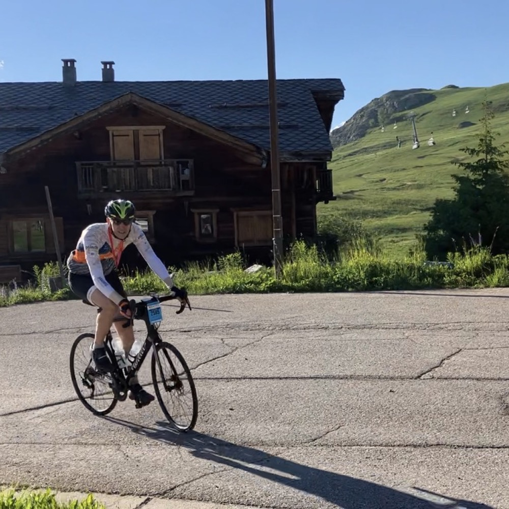

Home
Marmotte Granfondo Alpes 2023
Hautes Alpes, Isère, Savoie
Wie es dazu kam
Das ist dieses Mal ganz einfach: Letztes Jahr war es schön und wir haben die Hütte bei Abreise 2022 einfach direkt wieder für das nächste Jahr gebucht. Acht Gefährten sind aus ganz Deutschland aus aufgebrochen, von Hamburg bis Stuttgart. Dieses Mal sind wir drei Tage vorher in Alpe d'Huez um ein gewisses Maß an Akklimatisierung zu erreichen.
Die Vorbereitung
Natürlich hatten alle gewissenhaft für das Ereignis trainiert. So stehen dann erstmal ein paar lockere Aufwärmkilometer rund um Alpe d'Huez an. Das Problem: Am Ende der Tour müssen wir immer wieder nach oben. Am ersten Tag fahren wir über den fast 2000m hohen Col de Sarenne und erleben ein paar großartige Ausblicke von den in den Fels gehauenen Straßen aus. Am zweiten Tag machen wir uns mit den oberen Kurven der Alpe vertraut. Ein kleines Bisschen Tempo oder auch nur ein lockeres Rollen in der Höhe. Wir sind aufgeregt, morgen geht es los.
Die Strecke
Eigentlich ist im Rennbericht von 2022 ja schon alles zur Strecke gesagt. Aber die Organisatoren haben sich für dieses Jahr ein besonderes Schmankerl ausgedacht: Den Col de Mollard. Ein "kleiner" Gegenanstieg nach einer kurzen Abfahrt vom Col de la Croix de Fer, der in diesem Jahr statt des Col du Glandon befahren wird. Es geht also von Le Bourg d'Oisans aus hinauf auf den Croix de Fer, hinüber zum Mollard, hinab ins Maurienne Tal und von dort über den Col du Télégraphe hinauf zum Col du Galibier. Dort erwartet uns die längste Abfahrt hinab über den Col du Lautaret bis zurück nach Le Bourg d'Oisans von wo aus es wieder hinauf nach Alpe d'Huez geht.
Kurz zusammengefasst alse: Hinauf, hinüber, hinab, hinauf, hinab und wieder hinauf. 187 km erwarten uns gespickt mit mehr als 5500 Höhenmetern.
Der Start
Es ist 5 Uhr. Jan ist schon abgedüst. Der Ultrafondo startet am Fuße von Alpe d'Huez. Unser Start ist für 7:20 Uhr angesetzt. Es gibt Reis, Obst, Baguette, Müsli. Ein letzter Check des Materials und die Trikottaschen vollpacken. Es ist kühl um 6:30 Uhr. Wir fahren von 1850m ab nach Le Bourg d'Oisans. Hunderte Rennradler tun es uns gleich. Mit jedem Meter wird es wärmer. Als wir im Dorf ankommen sind die ersten schon gestartet. Wir fahren zu unserem Startblock und warten, dass es los geht. Zeit für ein zweites Frühstück.
Mit etwas Verspätung setzt sich unser Startblock gegen 7:30 Uhr in Bewegung. Es ist ruhig im Feld. Wir haben ca. 15km Zeit um die Beine etwas auf Temperatur zu bringen, bevor es in die ersten Rampen des Col de la Croix de Fer geht. Mit sieben Fahrern machen wir ein kleines Bisschen Tempo. Mindestens 40 haben wir im Schlepptau. Und in der aufgehenden Morgensonne sehen wir die Rampen zum Stausee von Allemont.
Col de la Croix de Fer
Auf dem Col de la Croix de Fer war ich zum ersten und bisher einzigen Mal bei der L'Etape du Tour 2022. Damals aus der entgegengesetzten Richtung. Im Vergleich zur Überfahrt über den Glandon beim Marmotte im letzten Jahr, geht es zum Croix de Fer nochmal zwei km weiter seicht bergauf. Die eigentliche Arbeit beginnt aber viel früher. Die unteren Rampen sind nicht selten steiler als 10%. Nach dem ersten Drittel des Anstiegs gibt es einen extrem steilen und technischen Gegenhang, an dem uns die ersten Verletzten begegnen. Danach geht es noch einmal mit durchschnittlich mehr als 9% über mehrere Kilometer bergauf, bevor es am oberen Stausee deutlich flacher wird. Wir pacen sauber bei kanpp 3 W/kg.
Die erste Verpflegungsstation ist eine Katastrophe. Auf viel zu kleinem Raum wollen viel zu viele Fahrer nach immerhin fast zwei Stunden ihre Vorräte auffüllen. Wir besorgen uns Wasser und fahren in die Abfahrt. Es erwarten uns einige leicht technische Passagen bei hoher Geschwindigkeit und ein Mix aus flotten Abfahrern und ängstlichen Mitstreitern. Die Straßen sind schmal im oberen Bereich bevor der technische Teil in eine seichte Landstraße mündet. Wir befinden uns in der Anfahrt zum heutigen Extraanstieg. Dem Col du Mollard.
Col du Mollard
Ich habe noch nie von diesem Pass gehört. Zumindest bis vor ein paar Tagen. Der Anstieg ist auch nicht besonders bemerkenswert, abgesehen davon, dass er die Strecke bis ins Maurienne Tal um gut eine Stunde verlängert. Die Abfahrt hatte es dafür in sich. 40 Haarnadeln im ständigen Licht-/Schattenwechsel auf einer schmalen Straße in erbärmlichen Zustand. Und leider hatten die Organisatoren es verpasst, gut sichtbare Schilder aufzustellen, aus denen erkenntlich war, dass die Abfahrt neutralisiert ist. Im Ergebnis führte das zu mehreren schweren Unfällen. Ein fader Beigeschmack in einem Rennen, das sonst – und auch heute an den meisten Stellen – perfekt organisiert ist.
Im Wind
In jedem Rennen kommt irgendwann der Punkt an dem man die eigene Motivation mit seinen körperlichen Möglichkeiten abgleichen muss. Wir kommen zu fünft aus der Abfahrt des Mollard und finden uns auf den wenigen flachen Kilometern im Maurienne Tal wieder. Die Gruppen hier sind in Erwartung des Anstiegs zum Col du Galibier meist aufregend langsam unterwegs. Niemand möchte so richtig gerne die Nase in den Wind halten. Der Abgleich liefert unterschiedliche Ergebnisse in unserer Gruppe und zum ersten Mal verlieren wir uns. Mich erwartet das nächste Wasserloch im Maurienne Tal. Bis zur nächsten Verpflegung sind es noch 1000 Höhenmeter. Vor uns liegt der Col de Télégraphe. Die erste Hälfte auf dem Weg zum Galibier.
Zusammenkunft am Télégraphe
Die zweite Rennhälfte bricht an und erstaunlicherweise fühlen sich die Beine noch gut an. Wir halten die angestrebte Pace von 3 W/kg und versuchen die verlorenen Brüder wieder einzuholen. Mittlerweile gehören wir zu den Schnelleren in unserem Segment des Feldes. Die Temperaturen steigen, sind aber nicht so gnadenlos wie im letzten Jahr. 2km vor dem Col sind wir wieder zu fünft. Meine Gangschaltung spinnt und ich fahre auf dem kleinen Kettenblatt in die Abfahrt. Bis zur Verpflegungsstation in Valloire sind es nur noch ein paar Meter. Die Pause muss genutzt werden.
Der Galibier
Ganz ehrlich gesagt habe ich mich noch nie mit der Funktionsweise moderner Umwerfer auseinandersetzen müssen. Umso größer die Herausforderung, wenn man einen Defekt in sengender Mittagsonne während eines Rennes beheben muss. Nach ein paar Minuten gefriemel tut die Schaltung immerhin wieder. Und allzusehr brauche ich meine großen Gänge heute ohnehin nicht mehr.
An der Verpflegungsstation gibt es Baguette und Camembert. Eine sehr willkommene Abwechslung für den Magen. Wir beginnen mit dem Anstieg zum Galibier. Die Höhe wird auch in diesem Jahr ein Thema, aber wir schaffen es weitgehend unsere Pace beizubehalten. Die Gipfelstation ist dieses Mal schon ein paar Meter weiter unten. Es gibt nochmal Baguette und Cammembert und alles was sonst noch so reingeht. Bis Alpe d'Huez fahren wir fast eine Stunde bergab. Genug Zeit zum Verdauen.
Eine rasante Abfahrt
 Oben am Galibier kenne ich mittlerweile jede Kurve und jede Bodenwelle. Die Abfahrt wird rasant. Nach 600 Höhenmetern geht der technische Teil der Abfahrt am Col du Lautaret in einen ebenso schnellen aber deutlich einfacheren Teil über. Die breiten Straßen ohne Gegenverkehr erlauben zum ersten Mal am heutigen Tag ein wenig Entspannung, denn die starke Thermik, die uns aus dem Tal entgegenbläst macht allzu starkes pedallieren weitgehend sinnlos. Wir fahren durch La Grave, sammeln uns kurz wieder und folgen dem Flusslauf der Romanche vorbei am Lac du Chambon zurück bis nach Le Bourg d'Oisans. Bei abermals über 30°C füllen wir unsere Flaschen auf und gönnen uns eine letzte Portion Zucker. Die 21 Kehren von Alpe d'Huez liegen direkt vor uns.
Oben am Galibier kenne ich mittlerweile jede Kurve und jede Bodenwelle. Die Abfahrt wird rasant. Nach 600 Höhenmetern geht der technische Teil der Abfahrt am Col du Lautaret in einen ebenso schnellen aber deutlich einfacheren Teil über. Die breiten Straßen ohne Gegenverkehr erlauben zum ersten Mal am heutigen Tag ein wenig Entspannung, denn die starke Thermik, die uns aus dem Tal entgegenbläst macht allzu starkes pedallieren weitgehend sinnlos. Wir fahren durch La Grave, sammeln uns kurz wieder und folgen dem Flusslauf der Romanche vorbei am Lac du Chambon zurück bis nach Le Bourg d'Oisans. Bei abermals über 30°C füllen wir unsere Flaschen auf und gönnen uns eine letzte Portion Zucker. Die 21 Kehren von Alpe d'Huez liegen direkt vor uns.
Alpe d'Huez
 Wohldosiert die letzte Energie aus den Beinen holen ist in diesem Jahr das Ziel. Ich finde es erstaunlich, wie im Profi Peloton immer davon geredet wird, dejenige, der sich am meisten quälen könne gewinnt das Rennen. Ich würde mich gerne mehr quälen, aber mein Körper zeigt mir, dass eine Veranstaltung wie diese mich einfach an meine Grenzen bringt. Die 3 W/kg stehen, aber jeder Antritt darüber bringt mich einem Krampf näher. Die ersten Rampen von Alpe d'Huez sind erbarmunglos. 10% und mehr zeigt der Computer auf den ersten Kilometern an. Kadenz, Kraft, Ruhe, darauf kommt es an. Die Gruppe ist nun in drei Teile zerfallen. Sauberes Pacing für jeden Einzelnen wichtig. Die Photos scheinen zu zeigen, dass in diesem Jahr mehr Spaß als Qual dabei war. Vielleicht habe ich etwas gelernt. Klar ist aber auch, dass solche Distanzen trotz gewissenhaften Trainings für uns Hobbyradler eine Herausforderung bleiben.
Wohldosiert die letzte Energie aus den Beinen holen ist in diesem Jahr das Ziel. Ich finde es erstaunlich, wie im Profi Peloton immer davon geredet wird, dejenige, der sich am meisten quälen könne gewinnt das Rennen. Ich würde mich gerne mehr quälen, aber mein Körper zeigt mir, dass eine Veranstaltung wie diese mich einfach an meine Grenzen bringt. Die 3 W/kg stehen, aber jeder Antritt darüber bringt mich einem Krampf näher. Die ersten Rampen von Alpe d'Huez sind erbarmunglos. 10% und mehr zeigt der Computer auf den ersten Kilometern an. Kadenz, Kraft, Ruhe, darauf kommt es an. Die Gruppe ist nun in drei Teile zerfallen. Sauberes Pacing für jeden Einzelnen wichtig. Die Photos scheinen zu zeigen, dass in diesem Jahr mehr Spaß als Qual dabei war. Vielleicht habe ich etwas gelernt. Klar ist aber auch, dass solche Distanzen trotz gewissenhaften Trainings für uns Hobbyradler eine Herausforderung bleiben.
Das Ziel
In der auslaufenden Rampe an der Vieil Alpe durchströmt Adrenalin meinen Körper. Ein Kick, wie ich ihn seit Jahren nicht mehr gespührt habe. Die letzten Höhenmeter rollen wie von alleine und obwohl die Beine eigentlich nicht mehr können, endet das Rennen mit ganz viel Freude. Jan wartet im Ziel auf uns. Perfekt, denn allein wäre ich nicht mehr von meinem Fahrrad gekommen. Wir schließen das Rennen irgendwo im vorderen Drittel ab und machen uns auf den Weg nach Hause. Dieses Mal müssen wir nur noch 70m klettern und können einen wunderschönen Abend ganz gemütlich ausklingen lassen.
Ein nicht ganz kurzes Fazit
Mit der diesjährigen Routenänderung ist das Marmotte vielleicht noch attraktiver geworden. Die Strecke ist toll, weitgehend gut gesichert und es gibt eine durchweg gute Stimmung zwischen den Fahrern. Die 5500 Höhenmeter sind auf Ötztaler Niveau und die Strecke ist durch die fehlenden Flachstücke mutmaßlich sogar härter. Das ich ein großer Fan der Region bin, muss ich an dieser Stellen nicht noch einmal erwähnen.
Die Abfahrt vom Col de Mollard war irgendwie über. Einen Aufstieg hier kann ich mir gut vorstellen, aber die Abfahrt würde ich wahrscheinlich noch nicht einmal allein auf freier Strecke wählen, hätte ich eine Alternative.
 Das Problem mit der ersten Verpflegungsstation haben fast alle größeren Veranstaltungen. Es ist ein Bisschen wie die Buffeteröffnung auf einer Hochzeit. Ich verstehe nicht ganz, warum man sich hier so wenig Mühe mit der Logistik gibt. Da ich auf Anraten eines Ausdauerspezielisten aber mittlerweile hauptsächlich mit Getränkepulver unterwegs und nicht auf feste Nahrung angewiesen bin, stört mich das auch nicht mehr sehr.
Wann immer man Zeit hat, den Ausblick zu genießen, findet man sich in einer der schönsten Regionen Europas. Die Alpen sind hier gigantisch und vielseitig. Und wenn man sich mit dem französichen Gigantismus der Skistationen abfinden kann, findet man auch günstige und praktische Unterkünfte.
Ich werde im nächsten Jahr wohl wieder hier sein.